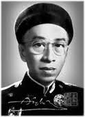

Chính tên là Lâm Tấn Phác. Sinh ngày 16 tháng 2 năm Bính Ngọ (10-3-1906) ở làng Mỹ Đức (Hà Tiên). Thôi học nhà trường năm 16 tuổi. Chịu ảnh hưởng tạp chí Nam Phong.
Lập trí đức học xá. Chủ trương báo Sống (1935).
Đã viết giúp: Nam Phong, Trung bắc tân văn, Đông Pháp thời báo, Kỳ lân báo...
Đã xuất bản:Thơ Đông Hồ (1932), Cô gái xuân (1935).

.
Hoàn cầu dễ ít có thứ tiếng được âu yếm, nâng niu như tiếng Nam. Âu cũng vì tiếng Nam đương ở trong cảnh khốn cùng, đương bị nhiều người rẻ rúng. Thói thường con nhà nghèo vẫn thương yêu cha mẹ hơn con nhà sang trọng.
Nhưng yêu quốc văn mà đến như Đông Hồ kể cũng ít. Thất học từ năm mười lăm, mười sáu; từ đó người chỉ học quốc văn, viết quốc văn, rồi mở trường chuyên dạy quốc văn. Cả những lúc người đai cơm bầu nước cùng học trò đi chơi các vùng thắng cảnh đất Phương thành, các đảo dữ miền duyên hải, tôi tưởng cũng chỉ vì quốc văn: người đi tìm cảm hứng vậy.
Khốn nỗi, người ra đời vào lúc văn học nước nhà đương hồi tàn tạ. Vốn tính hiền lành, không đủ táp bạo để gây nên giữa làng văn một cuộc biến động cần phải có, lúc đầu người chỉ cam tâm hiến mình cho những lối xưa ràng buộc, và người cũng không hề lấy thế làm bứt rứt khó chịu, chưa bao giờ người có ý muốn thoát ly.
Mặc dầu sự tình cờ đã đôi lần đưa người ra ngoài khuôn sáo. Trong tập Thơ Đông Hồ, giữa bao nhiêu câu trơn tru mà tầm thường, trống rỗng đột nhiên ta gặp đôi lời dường như trong ấy ẩn náu một linh hồn. Như những lời thuật hoài sau khi nàng Linh Phượng đã thành người thiên cổ:
Mối sầu khôn dãi cùng trời đất;
Chén rượu đành khuây với nước non.
Cùng những lời nhớ bạn, hoặc thật thà:
Khi biệt dễ dàng khi gặp khó;
Chốn vui ai nhớ chốn sầu chi.
hoặc kín đáo
Cái oanh đâu bỗng ngoài hiên gọi:
Đã hai lần rồi xuân vắng mai (1)
Với nỗi thắc mắc ấy, với nỗi buồn man mác ấy, Đông Hồ đã đi xa trường thơ Nam Phong nhiều lắm.
Nhưng trong tập Thơ Đông Hồ, lạ nhất là bài "Tuổi xuân", người ta có thể tưởng nó đã ở đâu lạc tới. Đến khi tác giả đưa in lại vào tập Cô gái xuân, ta mới thấy nó tìm được hoàn cảnh tự nhiên của nó. Bởi vì trong bài "Tuổi xuân" có cái bồng bột, cái trịnh trọng trước tình yêu mà cả thế hệ trước đây không từng quen biết: họ quen xem người đàn bà như một thứ đồ chơi.
Đông Hồ vẫn là người của thế hệ bây giờ vậy. Cho nên phong trào thơ mới vừa nổi lên là người nhận ngay được con đường của mình. Với phong trào thơ mới tưởng không có sự đắc thắng nào vẻ vang hơn.
Từ nay, Đông Hồ sẽ chỉ ca tình yêu và tuổi trẻ. Ngòi bút của thi nhân riêng âu yếm những nỗi lòng của thiếu nữ, khi bình yên lặng lẽ, khi phới phới yêu đương. "Cô gái xuân" của Đông Hồ thỏ thẻ những lời đến dễ thương, những lời tuồng như lả lời mà vẫn trong sạch. Ta thấy trong lời nàng cả cái êm dịu cái mơn trớn vuốt ve của tình ái. Nghe nàng nói lòng nào không xiêu? Nhất là khi nàng kể cảnh ái ân trên bãi biển ta khó có thể không cùng nàng mơ tưởng đến những cảnh ấy. Đông Hồ là người thứ nhất đã đưa vào thi ca Việt nam cái vị bát ngát của tình yêu dưới ánh trăng thanh tiếng sóng.
Ai cũng thấy thơ Đông Hồ và Cô gái xuân khác nhau xa. Tuy vậy, nếu trong Thơ Đông Hồ ta thấy khơi nguồn thơ Cô gái xuân thì trong Cô gái xuân vẫn còn lai láng cái buồn những vần thơ cũ.
Août-1941
Chú thích
[1] "Mai" cũng là tên người yêu (xem bài "Nhớ Mai" trong Cô gái xuân)
CÔ GÁI XUÂN
Trong xóm làng trên, cô gái thơ,
Tuổi xuân mơn mởn vẻ đào tơ
Gió đông mơn trớn bông hoa nở,
Lòng gái xuân kia vẫn hững hờ.
Lững thững lên trường buổi sớm chiều,
Tập tành nghiên bút, học may thêu
Quần đen, áo trắng, khăn hồng nhẹ,
Ngọn xoã ngang vai, tóc bỏ đều
Lá rợp cành xoài bóng ngả ngang,
Cô em dừng bước nghỉ bên đường,
Cởi khăn phẩy giọt mồhôi trán,
Gió mát lòng cô cũng nhẹ nhàng.
Đàn bướm bay qua bãi cỏ xanh,
Lòng cô phất phới biết bao tình.
Vội vàng để vở bên bờ cỏ,
Thoăn thoắt theo liền đàn bướm xinh.
Áo trắng khăn hồng gió phất phơ,
Nhẹ nhàng vui vẻ nét ngây thợ
Trông cô hớn hở như đàn bướm,
Thong thả trời xuân mặc nhởn nhơ.
Đàn bướm bay cao, cô trở về,
Sửa khăn, cắp sách lại ra đi,
Thản nhiên, cô chẳng lòng thương tiếc,
Vì bướm ngày xân chẳng thiếu chi!
Cũng xóm làng trên cô gái thơ,
Tuổi xuân hơn hớn vẻ đào tơ.
Gió đông mơn trớn bông hoa nở,
Lòng gái xuân kia náo nức chờ.
Tưng bừng hoa nở, bóng ngày xuân,
Rực rỡ lòng cô, hoa ái ân.
Như đợi, như chờ, như nhớ tưởng,
Đợi, chờ, tưởng, nhớ bóng tình quân.
Tình quân cô; ấy sự thương yêu,
Đằm thắm, xinh tươi, lắm mỹ miều
Khao khát, đợi chờ, cô chửa gặp,
Lòng cô cảm thấy cảnh đìu hiu.
*
Một hôm, chợt thấy bóng tình quân,
Gió lộng mây đưa thoáng đến gần.
Dang cánh tay tình, cô đón bắt,
Vô tình mây gió cuốn xa dần.
Gót ngọc phăng phăng cô đuổi theo:
“Tình quân anh hỡi! Hỡi người yêu!
“Gió mây xin để tình quân lại;
“Chậm chậm cho em nói ít điều…”
Han ôi! Mây gió vẫn vô tình,
Cuồn cuộn bay trên ngọn núi xanh.
Nhìn ngọi núi xanh, mây khói toả,
Mắt cô, đôi giọt lệ long lanh.
Lá rợp cành xoài bóng ngả ngang,
Cô em dừng bước nghỉ bên dường.
Cởi khăn phẩy gió mồ hôi trán,
Gió mát, lòng cô những cảm thương.
Lủi thủi bên đường, cô ngẩn ngơ
Chốn này, đuổi bắt bướm ngày xưa,
Cô buồn, cô tiếc, cô ngui ngậm,
Cô nhớ ngày xuân, nhớ tuổi thơ:
“Đàn bướm bay qua bãi cỏ xanh,
“Lòng cô phất phới biết bao tình.
“Vội vàng để vở bên bờ cỏ,
“Thoăn thoắt theo liền đàn bướm xinh…
“Đàn bướm bay cao, cô trở về,
“Sửa khăn cắp sách lại ra đi
“Thản nhiên, cô chẳng lòng thương tiếc,
“Vì bướmngày uân chẳng thiếu chi!….”
Ái tình nào phải bướm ngày xuân,
Tình ái ngày xuân chỉ một lần.
Một thoáng bay qua không trở lại,
Gái xuân rỏ lệ khóc tình quân!
MUA ÁO
“Chiếc áo năm xưa đã cũ rồi,
Em đâu còn áo mặc đi chơi
Bán thơ, nhân dịp anh ra chợ,
Đành gởi anh mua chiếc mới thôi!
– Hàng bông mai biếc màu em thích,
Màu với hàng, em đã dặn rồi
Còn thước tấc, quên! Em chửa bảo:
Kích từng bao rộng, vạt bao dài?
– Ô hay! Nghe hỏi mà yêu nhỉ!
Thước tấc anh còn lựa hỏi ai.
Rộng hẹp, tay anh bồng ẵm đó,
Ngắn dài, người mới tựa bên vai!”
TUỔI XUÂN [1]
Kể từ khi quen nhau
Vừa mười ba tuổi đầu
Tuổi xuân, tuổi vui sướng
Nào có biết chi sầu
Quen nhau thì yêu nhau
Yêu nhau quấn quít nhau
Quây quần trong một tổ
Như đôi chim bồ câu
Ngày tháng chỉ mong cầu
Bên nhau được dài lâu
Sum vầy lòng những ước
Ly biệt có ngờ đâu
Muốn thế, vẫn được thế
Ai khéo chiều nhau tệ
Bao những cuộc vui cười
Cùng nhau cùng chia sẻ
– Anh ơi, em muốn học
Anh hãy dạy em đọc
Dạy em không? Hở anh?
Không dạy em, em khóc
– Em đừng làm nũng chứ!
Hãy nói anh nghe thử
Em muốn học chữ gì?
– Em muốn học Quốc ngữ!
Quốc ngữ chữ Việt Nam
Này thơ em, anh xem
– Anh nghe, em cứ đọc!
– Thơ rằng: “Anh yêu em!…”
“Em muốn dạy anh theo
– Yêu em, anh phải chiều,
– Chỉ kim, anh thử lựa,
Nghe lời em, em yêu
Này! Anh thêu khéo chán,
Ngàn mây đôi chiếc nhạn
Chắp cánh tung trời bay,
Trăm năm cùng kết bạn
– Tươi thắm bức lụa là,
Đôi chim nhạn kông già
Đời mình âu cũng thế
Ngày xuân ở với ta…
– Này anh, buổi thư nhàn
Em dạy anh học đàn
– Học đàn khó! – Đâu khó!
Chỉ đôi tiếng nhặt khoan!…
Khoan nhặt đôi đường tơ
Lay động đôi lòng thơ
Gảy nên khúc tình ái
Khúc dứt, lòng ngẩn ngơ…
Buông bắt bên tơ trúc,
Nhìn em, năm ngón ngọc,
Năm búp măng nõn nà,
Mải nhìn đàn chửa thuộc…
“Anh ơi! Em muốn chơi,
Non nước chốn này vui…”
Âu yếm, cầm tay dắt
Cùng nhau hưởng cảnh trời
Ngày lặng, màu hoa cỏ,
Đêm thanh, thú trăng gió
Cảnh trời với lòng người
Biết bao lần gặp gỡ.
“Anh! Em muốn chơi thuyền
Một ngày ta làm tiên…”
Buông buồm theo ngọn gió,
Sóng nước những triền miên
Trời biển cảnh lồng lộng,
Đôi tấm lòng rung động.
Kề vai sẽ tựa nhau,
Chập chờn trong giấc mộng.
Bên rừng chiếc là rơi,
Mặt nước, cánh hoa trôi
Chòm mây bay tản mác,
Đôi nhạn rẽ phương trời
Trông cảnh, em ngậm ngùi
Nhìn anh, em thở dài,
Cảm nghĩ chuyện dời đổi
Giọt lệ bắt đầu rơi!…
Biết đời từ hôm ấy
Tuổi lớn, ngày dần thấy:
Chuyện buồn đưa đến thường,
Ngày vui không có mấy
Đôi lứa cũng xa nhau
Tuổi xuân còn mãi đâu
Biệt ly nay mới biết,
Chi xiết nỗi thuơng đau
Giọt lệ một lần ứa,
Biết bao lần chan chứa;
Một lần khi bắt đầu,
Biết bao lần sau nữa!
Chốc, mười mấy năm trời,
Trăm nghìn cảnh đổi dời,
Nói đến chuyện gặp gỡ
Sóng ngược lại bèo xuôi!
Cuộc đời những lăn lóc.
Tiếng cười đổi tiếng khóc
Nào đâu bạn trẻ thơ
Cùng ta kề mái tóc?
Buồn nhớ cảnh năm xưa
Lòng riêng những thẫn thờ
Tóc xanh hồ đã bạc,
Luống tiếc tuổi ngây thơ!
(Cô gái xuân)
[1] Bài này nguyên ở trong Thơ Đông Hồ, sau lại đưa vào Cô gái xuân. Thi nhân có thêm ít nhiều. Tiế sao người lại không bổ đôi đỏm đảnh quá
BỐN CÁI HÔN
“… Em nhớ: một sáng ngày mùa đông,
Gió bấc ào ào tiếng hãi hùng
Theo khe cửa sổ, gió thổi rít
Chỉ nghe tiếng gió mà lạnh lùng!
Em cuốn mình trong làn chăn đệm,
Đệm cỏ, chăn bông em chẳng ấm,
Bỗng như có một ánh than hồng.
Chạm vào trán em chạy vào lòng,
Lòng em ấm áp, hơi lạnh tan;
Em nằm sung sướng mà bàng hoàng
Sờ tay lên trán em mới biết:
Hơi ấm âu yếm mẹ em hôn…
… Em nhớ: một buổi chiều mùa thu,
Bấy giờ mẹ em mất đã lâu
Trông chiếc lá rơi, em ủ rủ.
Hơi may hiu hắt, em buồn rầu
Mất mẹ, em mất tình âu yếm,
Lạnh lùng, em thiếu hơi hôn ấm.
Đứng tựa bên vườn em ngẩn ngơ
Chợt thấy cha em về trước sân,
Áo quần lấm láp vết phong trần,
Chạy ra mừng rỡ đưa tay đón,
Cúi xuống mái đầu, cha em hôn
Từ hôm em được cha em hôn,
Đầm ấm lòng em bớt nỗi buồn.
Nhưng cha em mải bận xuôi ngược,
Rày đó mai đây việc bán buôn…
... Em nhớ: một buổi trưa mùa hạ,
Buổi trưa nặng nề, trời oi ả.
Tựa cửa lớp học, em rầu rầu,
Nghe tiếng ríu rít đàn chim sâu
Trước sân, bè bạn em nô đùa
Riêng em buồn cảm thân bơ vơ:
Mẹ mất, còn cha, cha ít gặp,
Một năm chỉ hai lần rước đưa!…
Đi qua, gọi em hỏi sự tình.
Cầm tay cô dắt lại bàn học,
Ân cần, thương yêu vuốt mái tóc.
Rồi cô âu yếm hôn tay em,
Lộng qua cửa lớp cơn gió nồm,
Bao năm buồn bực, gió thổi mát,
Cái hôn như ngọn gió êm đềm…
Nay em đang giữa cảnh đêm xuân
Gió trăng tình tứ đêm thanh tân
Trước vùng trời biển cảnh lồng lộng,
Cùng anh trao đổi tình ái ân
Khoác tay anh đi trên bãi cát,
Cát bãi, trong soi màu trắng mát.
Nghiêng đầu lơi lả tựa vai anh,
Lặng nghe sóng bãi đưa rào rạt.
Nước mây êm ái bóng trăng sao,
Say sưa em nhìn lên trời cao,
Buông khúc đàn lòng theo nhịp gió.
Giờ phút thần tiên hồn tiêu dạo
Một hơi thở mát qua, dịu dàng,
Như cơn gió biển, thoáng bay ngang
Rồi luồng điện ấm chạm trên má:
Ân ái môi anh kề nhẹ nhàng.
Nũng nịu, em ngả vào lòng anh,
Ngẩn ngơ ngừng lặng giây cảm tình
Tóc em xoã tung, tay gió lướt,
Bàng hoàng em nhớ chuyện sau trước:
Đời em khoảng hai mươi năm hơn
Được hưởng bốn lần âu yếm hôn
Bốn lần em thấy em sung sướng,
Mưa gió đời em đỡ lạnh buồn.
Nhưng, từ khi em thôi học rồi,
Cùng cô giáo em không gặp gỡ.
Mà rồi từ đó em lớn khôn,
Cha em cũng chẳng hôn em nữa,
Ba lần hôn kia em mất rồi,
Lần này biết có được lâu dài
Nước bèo, em nghĩ đời chia biệt,
Mà lệ sầu em thổn thức rơi!….
(Cô gái xuân)